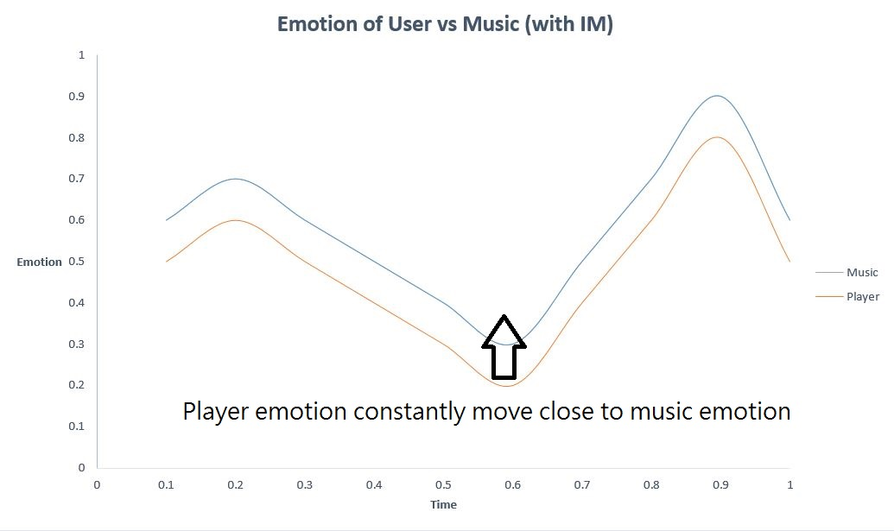

Archive
Some resources that make designers have wild views.
Tag: Storytelling , Sound design, UI/UX design
Storytelling
Nier's director, Yoko Taro talked about how he managed to write story in reverse fashion.
Sound Design
Introduction to Interactive Music - ianphth 2017/10/06
In order to promote the concept of interactive music, this article will show how interactive music works and the implementation experience in Unreal Engine 4.
The sound programmer/designer of Final Fantasy XV, Sho Iwasaki talked about the scheme for mixing the epic music into interaction.
UI/UX Design
UI of Entertainment - ianphth 2018/04/30

Nintendo UI/UX designers talked about their experience in developing games like Splatoon and Mario Maker.